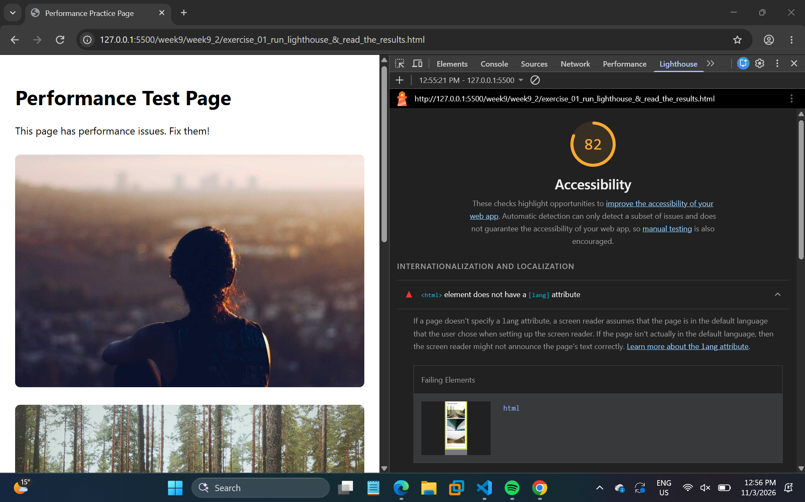
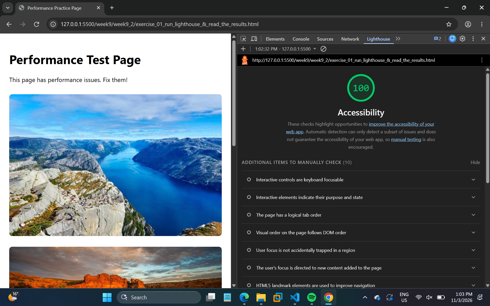

Performance Test Page
This page has performance issues. Fix them!
YOUR FIXES:
Added defer to the script, loading="lazy" to below-fold images, width/height attributes, smaller image sizes and a preload for the first image. Added lang="en" and a <main> landmark for accessibility.
Accessibility Changes: Before and After
The following evidence shows how accessibility improvements affected the Forum and Rewards pages. The changes included improving colour contrast, adding discernible names to links and controls, and making the page easier to understand with assistive technology.
Forum page


Rewards and leaderboard page


Lighthouse results for this exercise

lang attribute.